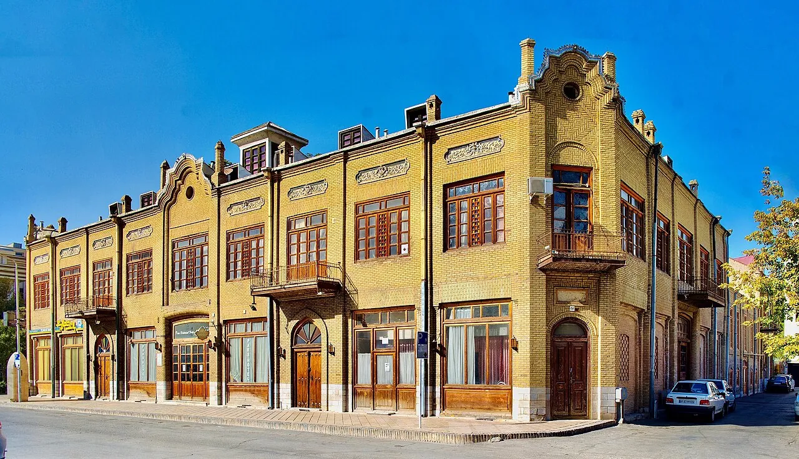

دليل الإقامة
اختيار فندق في مشهد حسب الشارع:
لا تعتمد على اسم الشارع وحده.
قد تساعد أسماء الشوارع القريبة من الحرم في تضييق البحث، لكنها لا تكفي وحدها لاختيار فندق. تختلف المسافة الفعلية والازدحام والخدمات من مبنى إلى آخر، لذا تحقق من العنوان الدقيق وشروط الحجز قبل الدفع.

شارع الإمام الرضا
عند مقارنة مكان إقامة في شارع الإمام الرضا، اطلب العنوان ورقم المبنى أو رابط الخريطة، وتحقق من طريق المشي الفعلي إلى المدخل الذي تنوي استخدامه. اسأل عن الضوضاء في ساعات الذروة وإمكانية وصول السيارة إلى المدخل، ولا تكتفِ بعبارة «قريب من الحرم».
شارعا شيرازي وطبرسي
إذا وجدت خيارات في شيرازي أو طبرسي، قارن مسافة المشي الفعلية والميل أو الدرج إن كان مهماً لأفراد الأسرة، وموقع الخدمات القريبة وطريقة الوصول بالأمتعة. لا يعني ذكر اسم الشارع أن كل فندق فيه يملك مستوى خدمة أو سهولة وصول واحدة.
منطقة نواب صفوي ومناطق أخرى
استخدم العنوان الدقيق لتقييم الطريق اليومي إلى الحرم والمتاجر والنقل، واسأل عن إمكانية الوصول بالسيارة في أوقات الازدحام. لا تفترض أن الأقرب على الخريطة هو الأنسب إذا كان الطريق أو مدخل الفندق غير ملائم لاحتياجاتك.
قائمة أسئلة قبل تأكيد الحجز
- ما العنوان الدقيق ورابط الموقع على الخريطة؟
- ما المسافة سيراً إلى المدخل المقصود، وليس المسافة الخطية؟
- هل السعر يشمل الضرائب والوجبات وأي رسوم إضافية؟
- ما سياسة الإلغاء والتعديل وتسجيل الوصول؟
- هل يوجد مصعد وغرفة مناسبة للعائلة أو لذوي الحركة المحدودة؟
- هل يمكن الوصول بالسيارة مع الأمتعة؟
قارن هذه التفاصيل مع دليل اختيار الإقامة قرب الحرم ودليل الميزانية.